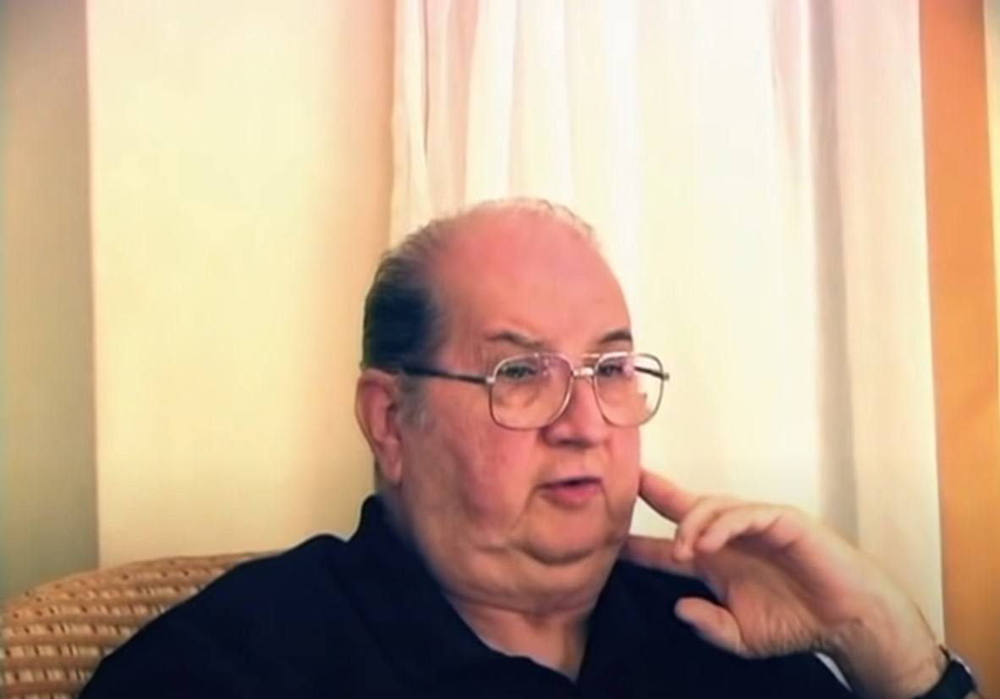

Jordan Maxwell が友人と気まぐれで入った食堂で奇跡的遭遇が起きた事件 →この謎を解く （完結）

履歴
(2023-01-24) 追加して完結。 (2023-01-16) 作成
前置き
- Jordan Maxwell が彼の体験を証言した下の動画、動画（128分）
・Jordan Maxwell - Close Encounters and other stories : A Project Avalon Interview with Bill Ryan は過去記事で何度も取り上げてきた。 - 以下では、その証言の中からタイトルの事件に絞り、その謎を解く。 - 証言は 「Jordan Maxwell の最も有名な UFO/ET 体験に関するインタビュー」の文字起こし （全体） (2022-07-21) から該当部分のみを以下で引用。事件の概要
- 動画の喋りを聴けば事件の流れがすんなり理解できる筈だが、DeepL の訳を読むだけでは、やや分かりづらいようだ。なのでこの事件をざっと説明しておくと… … …事件に該当する箇所の証言の原文 ＋ DeepL
Did I tell you about my friend, Bob Leeds? I have a young ... I have an older friend named Bob Leeds. He’s a big shot in the motion-picture industry. Well, that’s a long story. But, well, there’s two parts to this story, and it’s very long, it’s like another long one. But, anyway, Bob Leeds ... I’ll tell you the short version. Bob Leeds is a good friend of mine, but he was a very well-placed Jewish guy in the motion-picture business in Hollywood. And he and I were dear friends, very close friends. And so, Bob called me one morning, one Saturday morning, and said, ‘I’m going to take you out to breakfast. Let’s go out to breakfast.’ I said, ‘Okay.’ So, he said, ‘I’m going to take you to any of the best ... any place you want to go in San Diego, it’s my treat.’ And so I said, ‘Great.’ So he said, ‘Any place you want to go, we’ll go.’ And I said, ‘Okay.’ So he comes by and picks me up, and ... God, I love Bob. Bob was great. And, so I said, ‘I want to go to...’ Oh, what was the name of the town, just north of San Diego? It’s a little Mexican town, north of San Diego. I can’t remember the name right now, I’ll remember it in a minute. But it’s in a little dippy, little nothing town, north of ... And he said, ‘No, what I had in mind was going into downtown San Diego, to some really nice place.’ And I said to him, I said, ‘You said I could go wherever I want to go.’ He said, ‘That’s right.’ I said, ‘Well, that’s where I want to go, to this little dippy little town, north of here.’ And he says, ‘There’s nothing there.’ And I said, ‘That’s where I want to go.’ He said, ‘Okay, so we go there, then.’ So we get on the freeway, it’s about a twenty-minute drive, and so as we’re driving, we were talking about stuff. And we got on the subject of people that we would love to see again. People we’ve known in the past that we’d like to see again. 私の友人、ボブ・リーズのことは話したかな？ 私には若い......。ボブ・リーズという年上の友人がいるんだ。彼は映画業界の大物なんです。まあ、話せば長くなるんだけどね。でもまあ、この話には2つのパートがあって、とても長いんだ、もう1つの長い話みたいなものだよ。でも、とにかく、ボブ・リーズは・・・。短い話をしますよ。 ボブ・リーズは私の親友ですが、彼はハリウッドの映画ビジネスにおいて非常に地位の高いユダヤ人でした。そして彼と私は大切な友人、とても親しい友人でした。それで、ある土曜日の朝、ボブから電話がかかってきて、「君を朝食に連れ出そう」と言われたんです。朝食を食べに行こう」と。 私は「いいよ」と答えました。 それで彼は、「サンディエゴの最高の......行きたいところならどこでも連れて行くから、俺のおごりだ」と言ったんです。 それで私は「いいね」と言ったんです。 それで彼は、「君が行きたいところなら、どこでも行こう」と言ったんだ。 それで私は「わかった」と言った。 それで彼が迎えに来てくれて...... 神様、私はボブを愛しています。ボブは最高だった。 それで、「行きたいんだけど......」って言ったんです。ああ、サンディエゴの北にある町の名前は何だったかな？サンディエゴの北にある小さなメキシカンタウンです。今名前が思い出せないんだ、すぐに思い出すよ。でも、北にある小さなディッピー、小さな何もない町なんだ・・・。 彼は「いや、私が考えていたのは、サンディエゴのダウンタウンに行って、すごくいい場所に行くことなんだ」と言いました。 それで私は彼に言ったんです、「あなたは私が行きたいところへ行けると言いましたね」と。 彼は、『その通りだ』と言ったんだ。 私は、「じゃあ、ここから北にある、ちょっと小汚い小さな町に行きたいんだけど」と言ったんです。 すると彼は、『そこには何もない』と言ったんだ。 それで私は『そこが私の行きたいところです』と言いました。 彼は「よし、それならそこに行こう」と言った。 それでフリーウェイに乗って、車で20分くらい走ったんだけど、運転しながらいろいろ話していたんだ。そして、もう一度会いたい人の話になったんです。過去に知り合った人たちで、もう一度会いたい人たち。 And I was telling him some couple people I would love to see in my life again that I’ve lost track of, and then he was telling me, he said, ‘Well, there’s two people that fit that for me.’ He said, ‘There’s an old Native American Indian chief, Native American Indian, that I grew up knowing, and he was like my second father.’ And he said, ‘I loved him, and I just ... I would give anything in the world if I could see him again, the family again. I don’t even know if he’s alive. The people that knew him and knew me, I’ve asked them. And they don’t even know where he went. He’s gone, nobody knows. That’s the one man I would really like to see, is that old Native American Indian and his family.’ And he said, ‘And the other guy was a guy I went to school with and grew up with. He became a Mormon, and he became very wealthy, he’s a real-estate developer, construction. But I’ve lost track of him, and he was one of my dearest friends in my life. And I’ve lost him, too. I don’t know where he went. Nobody that knew him knows, either. So those are two people I’d like to see.’ And so we were talking about other things. So we get off the freeway, in this little Mickey Mouse town, and we’re driving through the city, and there’s no place to eat, except IHOP ... International House of Pancakes. Well, they’re everywhere. And so, I said, ‘Oh, there’s an IHOP. Let’s go there. That’s where I want to go.’ And he says, ‘Jordan, I was going to take you to a nice restaurant in San Diego, and you come up to this little town, to go to an IHOP?’ And I said, ‘That’s where I want to go. Come on, you say I could go, that’s where I want to go.’ He said, ‘Okay, we’ll go to IHOP.’ So we pull in and we park, and we go in, and this place is crowded because it’s the only place in town to eat, and then finally they seat us, and when we’re sitting down, he ... all of the sudden, his whole demeanor changed. I saw something was very, very radically wrong with him. I could tell it in his face, I could tell there was something wrong. And I said, ‘What’s going on, Bob? What’s wrong?’ And he said, ‘There is the old man, right there, and there’s my friend, the contractor, right there. Both of them. That’s the old man, and there’s my contractor friend.’ BR: [Laughs] JM: ‘Both of them.’ And he said to me, ‘I don’t know how you do this, but understand from this day forward, I believe you are somebody. I have never seen this. I just got through telling you I wanted to see these two people, and out of nowhere we come up here, and here they are. So you’ve sold me. I don’t know who you are, or where you’ve come from, or what you’re doing, but there’s something strange about you.’ And so I was amazed. And he, he had like tears in his eyes. He got up, went over and sat with the old man, and then his buddy saw him, he goes over there, and they’re all sitting around the table talking. … I don’t know what’s happening. I didn’t know. I just wanted to go to IHOP. So... BR: That’s a lovely story. That’s a beautiful story... JM: Incredible. BR: ...beautiful story. JM: And he had like tears in his eyes. He came back, and as we were driving home, he said, ‘I don’t know who you are, and I don’t know how this happened. But as far as I’m concerned, I’m never questioning anything again.’ He said, ‘I’ve had so many strange experiences around you, strange stuff, but today, that was a ... that took the cake today. I am totally, cannot believe what just happened today: The two people in my life I have wanted to see, and you brought me up here to this little town, out of nowhere to an IHOP, and there they both were. So wow.’ そして、私は、見失った人生でもう一度会いたい人を何人か話したら、彼は、「僕にはそれに該当する人が2人いる」と言ったんだ。ネイティブ・アメリカンのインディアンの年老いた酋長がいるんだけど、その人とは幼なじみで、彼は私の第二の父親みたいなものだった』って言ったんだ。 そして、『私は彼を愛していた、そして私はただ・・・。もう一度彼に、家族に会えれば、この世のどんなものでも捧げます。彼が生きているかどうかもわからない。彼を知っている人、私を知っている人、みんなに訊いてみたんです。どこに行ったかも知らないんだ 誰も知らないんだ 私が本当に会いたいのは、あの年老いたネイティブ・アメリカンのインディアンとその家族なんだ』。 そして、『もう一人は、私が一緒に学校に行って、一緒に育った男だ。彼はモルモン教徒になって、とても裕福になったんだ。不動産開発業者、建設業をやっている。しかし、私は彼の消息を絶った。彼は私の人生の中で最も大切な友人の一人だった。そして、私も彼を失った。彼がどこに行ったのか分からない。彼を知る人は誰も知らない。だから、その二人に会いたいんだ』。 それで私たちは他のことを話していたんです。それで私たちは高速道路を降りて、この小さなミッキーマウスの町で、街をドライブしていたんですが、IHOP・・・International House of Pancakes以外に食事をするところがないんです。まあ、どこにでもあるんですけどね。 それで、「あ、IHOPがある。そこに行こう。そこが行きたいところだ」と言った。 すると彼は、「ジョーダン、サンディエゴの素敵なレストランに連れて行こうと思っていたのに、こんな小さな町まで来て、IHOPに行くなんて」と言ったんだ。 それで僕は、「そこに行きたいんだ」と言ったんだ。さあ、あなたが行けると言ったのだから、そこに行きたいんだ」と言いました。 彼は「わかった、IHOPに行こう」と言ったんだ。 それで車を停めて、中に入りました。街で食事ができるのはそこだけなので、この店は混んでいました。そしてようやく席に座れました。そして私たちが座ると、彼は...突然、態度が一変したんです。何かとても、とても根本的におかしいと思ったんです。彼の顔を見れば、何かが間違っているのがわかりました。 それで私は「どうしたんだ、ボブ？どうしたんだ、ボブ？ すると彼は言いました、「そこに老人がいて、そこに私の友人の建設業者がいるんだ。二人ともです。あれが老人で、あれが私の友人の建設業者です」。 BR：[笑]。 JM：『2人ともね。そして彼は私にこう言いました、「どうやったらこんなことができるのかわからないが、今日から君は誰かだと信じることにしよう。こんなの見たことない。私はちょうどこの二人に会いたいと言っていたのですが、どこからともなくここに来て、ここにいるのです。私を売ったのか あなたが誰なのか、どこから来たのか、何をしているのか知らないが、あなたには何か不思議なところがあるね』。 それで私は驚きました。そして彼は、目に涙を浮かべていました。彼は立ち上がって、その老人のところに行き、一緒に座りました。そして、それを見た彼の仲間もそこに行き、みんなでテーブルを囲んで話をしました。...何が起こったのかわからない。私は知らなかったんです。IHOPに行きたかっただけだ。それで... BR: それは素敵な話ですね。素敵な話ですね...。 JM：信じられない。 BR: ...素敵な話ですね。 JM：そして、彼は目に涙を浮かべていました。あなたが誰なのか知らないし、どうしてこんなことになったのかも知らない。でも、私としては、もう二度と何も疑わない』って。 彼は言った、『あなたの周りには不思議な体験、不思議なことがたくさんあったけど、今日のことは......今日一番の出来事だった。私は全く、今日起こったことが信じられません。私の人生で会いたかった二人が、あなたが私をこの小さな町まで連れてきて、いきなりIHOPに連れてきて、そこに二人がいたんです。とてもすごいことです。この事件の謎を解く
… (2023-01-16)
(2023-01-24 begin)事件の概要
- 動画の喋りを聴けば事件の流れがすんなり理解できる筈だが、DeepL の訳を読むだけでは、やや分かりづらいようだ。なのでこの事件をざっと説明しておくと… - 私（Jordan Maxwell）の親しい友人に Bob Leeds というハリウッド映画業界の大物がいる。ある朝、Bob から電話があって「朝食を奢るから君の望むところへ行こう」と誘われた。 - Bob の車で私の行きたい食事処へ向かった。Bob は車を運転しながら、もう一度会いたい二人の人物について、次のように私に語った。それでフリーウェイに乗って、車で20分くらい走ったんだけど、運転しながらいろいろ話していたんだ。そして、もう一度会いたい人の話になったんです。過去に知り合った人たちで、もう一度会いたい人たち。 そして、私は、見失った人生でもう一度会いたい人を何人か話したら、彼は、「僕にはそれに該当する人が2人いる」と言ったんだ。ネイティブ・アメリカンのインディアンの年老いた酋長がいるんだけど、その人とは幼なじみで、彼は私の第二の父親みたいなものだった』って言ったんだ。 そして、『私は彼を愛していた、そして私はただ・・・。もう一度彼に、家族に会えれば、この世のどんなものでも捧げます。彼が生きているかどうかもわからない。彼を知っている人、私を知っている人、みんなに訊いてみたんです。どこに行ったかも知らないんだ 誰も知らないんだ 私が本当に会いたいのは、あの年老いたネイティブ・アメリカンのインディアンとその家族なんだ』。 そして、『もう一人は、私が一緒に学校に行って、一緒に育った男だ。彼はモルモン教徒になって、とても裕福になったんだ。不動産開発業者、建設業をやっている。しかし、私は彼の消息を絶った。彼は私の人生の中で最も大切な友人の一人だった。そして、私も彼を失った。彼がどこに行ったのか分からない。彼を知る人は誰も知らない。だから、その二人に会いたいんだ』。- 私は小さな街の IPOP（*: 軽食堂：マクドナルドみたいな食堂チェーン店）に決めた。Bob は都会の高級レストランで豪華な食事を奢る気でいたので、乗り気ではなかかったが、私は譲らなかったので、しぶしぶ IPOP に入ることを同意した。 - そして、二人で入った軽食堂で奇跡のような遭遇が起きた。それは、それで車を停めて、中に入りました。街で食事ができるのはそこだけなので、この店は混んでいました。そしてようやく席に座れました。そして私たちが座ると、彼は...突然、態度が一変したんです。何かとても、とても根本的におかしいと思ったんです。彼の顔を見れば、何かが間違っているのがわかりました。 それで私は「どうしたんだ、ボブ？どうしたんだ、ボブ？ すると彼は言いました、「そこに老人がいて、そこに私の友人の建設業者がいるんだ。二人ともです。あれが老人で、あれが私の友人の建設業者です」。 BR：[笑]。 JM：『2人ともね。そして彼は私にこう言いました、「どうやったらこんなことができるのかわからないが、今日から君は誰かだと信じることにしよう。こんなの見たことない。私はちょうどこの二人に会いたいと言っていたのですが、どこからともなくここに来て、ここにいるのです。私を売ったのか あなたが誰なのか、どこから来たのか、何をしているのか知らないが、あなたには何か不思議なところがあるね』。 それで私は驚きました。そして彼は、目に涙を浮かべていました。彼は立ち上がって、その老人のところに行き、一緒に座りました。そして、それを見た彼の仲間もそこに行き、みんなでテーブルを囲んで話をしました。...何が起こったのかわからない。私は知らなかったんです。IHOPに行きたかっただけだ。それで...というもの。この事件の謎を解く
- この証言を最初に聴いたのは 8-9年前だが、その時はこの事件の謎が解けなかった。その間に Blog 記事作成などを通じて幾分か鍛えられたようで、今はこの謎を簡単に解けるようになった。ヒント
- 注意しながら聴くと、Jordan Maxwell のこの話の中に（同時に二人との奇跡的な遭遇とは別に）とても不自然な部分があることに気づく筈。なぜ、そのような不自然な部分が話に登場しているのだろうか？ - それに気づけば、あとは連鎖反応的に全てが勝手に解ける。 - しかし、Jordan Maxwell もかなりのお人好しだ。Kerry Cassidy が- KC : Jordan Maxwell は ・豊富な洞察力とオカルト知識を持つ面と、 ・子供のように無邪気に相手を信じる面 を併せ持っていた。後者のために何度も騙され、裏切られていた。たとえば彼の Web 管理者が裏切って彼のコンテンツを持ち逃げした。 ref: Lucas Alexander ＋ Kerry Cassidy : Jordan Maxwell の生前の素顔を語る (2022-04-16)と Jordan Maxwell を彼の死後に論評していたが、さもありなん。 - …とここまでヒントを並べれば、もう十分な気がする。あとは読み手に任せたいところだが、勿体をつけていると誤解されるのも本意ではないので簡単にケリをつけておく。以下の謎解き箇所を展開する必要がない読み手が多いことを期待する。謎解き
(2023-01-24 end)▼展開
w… - この事件は Bob Leeds が友人の Jordan Maxwell を「悪ふざけ」でからかったもの。 - 最初から「担いでからかう」つもりで Bob Leeds が無名の役者を二人、手配した。ハリウッド映画業界の大物である Bob Leeds から声がかかれば、役者は誰でも喜んでこの話に乗る。 - Bob Leeds は Jordan Maxwell を助手席に乗せて、運転している間に「是が非でも会いたい二人の昔の友人」の話をしたのは、後の奇跡的遭遇の伏線を張るため。もちろん、そんな友人など作り話。 - 作り話の伏線だから、つい演出過剰になってそして、『私は彼を愛していた、そして私はただ・・・。もう一度彼に、家族に会えれば、この世のどんなものでも捧げます。とまで言ってのけた。 - Jordan Maxwell を乗せた Bob Leeds の車の後ろには、二人の役者が乗った車が追跡しているが、助手席の Jordan Maxwell がそれに気づくことはない。 - Jordan Maxwell と Bob Leeds が車から降りて、軽食堂に入ったのち、二人の役者もそしらぬ顔で入店し、Jordan Maxwell と Bob Leeds のテーブルから遠くないテーブルについた。 - それを確認してから Bob Leeds は「二人の昔の友人」を「偶然、発見して驚き」、「そこに老人がいて、そこに私の友人の建設業者がいるんだ。二人ともです。あれが老人で、あれが私の友人の建設業者です」と台本どおりの芝居を始めた。 - そして、彼は私にこう言いました、「どうやったらこんなことができるのかわからないが、今日から君は誰かだと信じることにしよう。こんなの見たことない。私はちょうどこの二人に会いたいと言っていたのですが、どこからともなくここに来て、ここにいるのです。私を売ったのか あなたが誰なのか、どこから来たのか、何をしているのか知らないが、あなたには何か不思議なところがあるね』。 ... 『あなたの周りには不思議な体験、不思議なことがたくさんあったけど、今日のことは......今日一番の出来事だった。私は全く、今日起こったことが信じられません。私の人生で会いたかった二人が、あなたが私をこの小さな町まで連れてきて、いきなりIHOPに連れてきて、そこに二人がいたんです。とてもすごいことです。と大げさに褒めて Jordan Maxwell を持ち上げてみせた。たぶん、常日頃から Jordan Maxwell から ・「自分の不思議な体験談」を聞かせられていた ・皆、この世の真実を知らない。私がそれを世間に教えねば…と聞かされていた ので、それが若干鼻についた。それで、つい悪ふざけする気になったのだろう。 - アメリカ人にはこういう悪ふざけが大好きな連中が多い。 - 蛇足：Jordan Maxwell が Bob Leeds の勧める豪華なレストランではなく寂れた街の軽食堂を選んだのは、彼の感情の機微を理解すれば納得できる。Bob Leeds を有力なコネとしてではなく、友人として扱おうという意図が働いている。
初出
Jordan Maxwell が友人と気まぐれで入った食堂で奇跡的遭遇が起きた事件 →この謎を解く （完結） (2023-01-24)